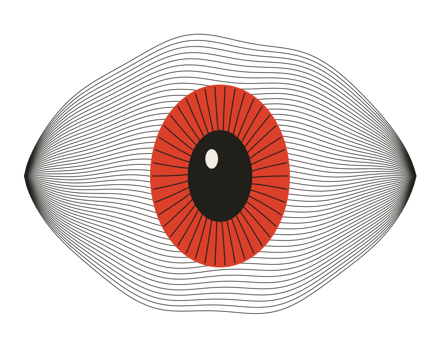

Собрать контекст.
Построить карту цели.
WETAKUSH.
[ ВЕТА / 001 ]Смотреть глубже ↓
У любой системы
есть изнанка.
Я ищу уязвимости и пишу код.
Мне интересно то, что
не видно с первого взгляда.
FIG. 01 / OBSERVATION↗

THE SYSTEM IS WATCHING.
PYTHON / C++ / C# / WEBДОВЕРЯЙ. НО ПРОВЕРЯЙ.
01 / ЗНАКОМСТВОWHOAMI
Не верю
на слово.
Привет, я вета.
Разработчик по складу ума.
Исследователь — из любопытства.
Мне нравится разбираться, как всё устроено. Где приложение принимает решение, кому доверяет API и что случится, если пойти не по сценарию.
Участвую в Bug Bounty на BI.ZONE и Standoff 365. Пишу инструменты, проверяю гипотезы и разбираю системы изнутри — от веба до низкоуровневого кода.
02 / ПОЛЕВАЯ ПРАКТИКАBUG BOUNTY
На реальных
системах.
Профили на платформах,
где я исследую безопасность.
BI.ZONE
SECURITY RESEARCHERПРОФИЛЬ НА ПЛАТФОРМЕ↗ [ 02 ]
STANDOFF 365
SECURITY RESEARCHERПРОФИЛЬ НА ПЛАТФОРМЕ↗
ПУБЛИЧНЫЕ ПРОФИЛИ ↗RESPONSIBLE DISCLOSURE
03 / ИНСТРУМЕНТАРИЙМЫШЛЕНИЕ → ПРАКТИКА
Разобрать.
Понять.
Собрать.
ОДИН ПОДХОД.
РАЗНЫЕ УРОВНИ АБСТРАКЦИИ.
01Безопасность
Ручной анализ веб-приложений и API. Авторизация, бизнес-логика, границы доверия. Проверка гипотез и воспроизводимые PoC.
BURP SUITE / OWASP / WEB & API02Разработка
Инструменты для исследований, автоматизация и приложения. Системный код, бэкенд и интерфейсы в браузере.
PYTHON / C++ / C# / JAVASCRIPT03Разведка и реверс
Сбор информации, исследование поверхности атаки и внутренней механики систем. Сначала контекст — потом выводы.
OSINT / LINUX / NETWORKING / REVERSE04 / ПОСЛЕДОВАТЕЛЬНОСТЬОТ ВОПРОСА К ДОКАЗАТЕЛЬСТВУ
«А что, если?..»
Хорошее начало.
Разобрать логику.
Найти неочевидный путь.
Воспроизвести баг.
Подтвердить влияние.
Показать доказательства.
Помочь устранить причину.
05 / ПРЯМАЯ СВЯЗЬБЕЗ ПОСРЕДНИКОВ
Есть что исследовать?
Или что-то, что стоит сделать вместе?
ИНТЕРЕСНЫЕ РАЗГОВОРЫ